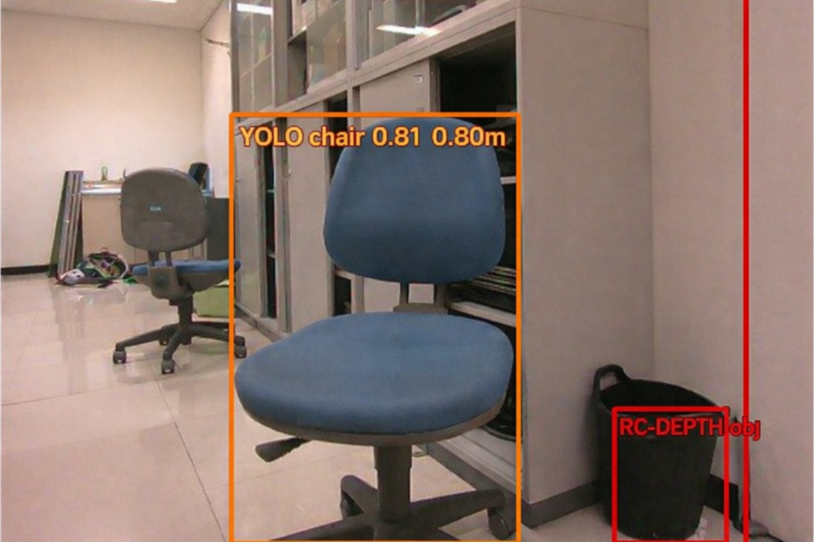
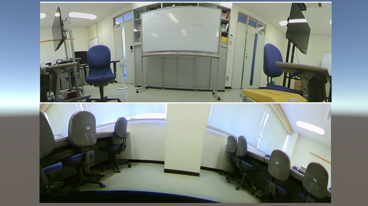
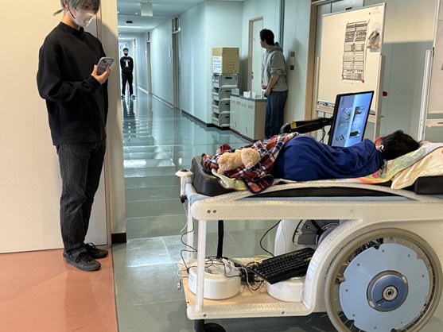

OVERVIEW
研究概要
本研究では、電動ストレッチャー利用者が周囲の状況を把握しやすくするための支援システムを開発しました。 学部時代のシステムでは、前後の映像をモニタに表示することで視界を補っていましたが、 実際には「距離感がつかみにくい」「進行方向が分かりにくい」「音声補助が欲しい」といった課題がありました。
そこで本研究では、カメラ映像に加えて音声通知を導入し、 利用者の安心感や安全性の向上を目指しました。
BACKGROUND
背景と課題
視界だけでは不足する場面がある
カメラ映像だけでは距離感や危険度が分かりにくく、 とくに移動中の判断を映像だけに頼るのは負担が大きいという課題がありました。
利用者の身体的制約
対象者は首や身体を自由に動かしにくいため、 1つのモニタと限られた情報提示の中で、状況を伝える必要がありました。
安心感の向上も重要
単に危険を知らせるだけでなく、 通常時の案内や会話的な補助によって不安を軽減することも重視しました。
GOAL
研究の目的
本研究の目的は、視界の確保と周囲状況の伝達を通して、 電動ストレッチャー利用者がより安全かつ安心して移動できるよう支援することです。
視界補助
カメラ映像をモニタに表示し、前後の状況を確認しやすくする。
音声補助
危険な場面だけでなく、通常時の案内も含めて状況を伝える。
SYSTEM
システム構成
システムは、映像表示を担当する Unity、物体検出や距離情報処理を行う Python 環境、 音声合成を行う VoiceVox などで構成されています。
- カメラ・センサで周囲情報を取得
- Python側で物体検出・状況判定
- 判定結果をもとに音声メッセージを生成
- Unity側で映像表示と通知を行う
FEATURES
主な工夫
映像と音声の役割分担
モニタによる視界補助に加えて、必要な情報だけを音声で伝えることで、 見落としを減らしつつ、情報量の負担を抑えることを意識しました。
緊急度に応じた通知
危険度が高い場合はアラート的に、通常時は案内として伝えるなど、 緊急度に応じて伝え方を変える構成を検討しました。
利用者視点での設計
単に技術を入れるのではなく、利用者の身体状況や感じる不安を踏まえて、 必要な情報が伝わるように設計しました。
複数技術の連携
Unity・Python・音声合成・センサ処理を組み合わせ、 ひとつの体験として成立するよう構成しました。
RESULT
成果
研究科長賞を受賞
修士研究としてまとめ、研究科長賞を受賞しました。
発表・質疑応答を経験
発表を通して、ミニマップやLiDAR設置位置、音声案内内容などについて議論し、 研究の整理を深めました。
研究テーマの軸を整理
「AIを作る」ではなく、「AIを活用して利用者にどう伝えるか」という観点を明確にできました。
IMAGES
研究イメージ



FUTURE
今後につなげたいこと
今後は、障害物検出だけでなく、周囲のお店や環境に関する情報なども含めて、 状況に応じた多面的な情報提示を行いたいと考えています。 また、通常時の対話と緊急時の通知の切り替え方についても、 さらに検討を進めたいです。